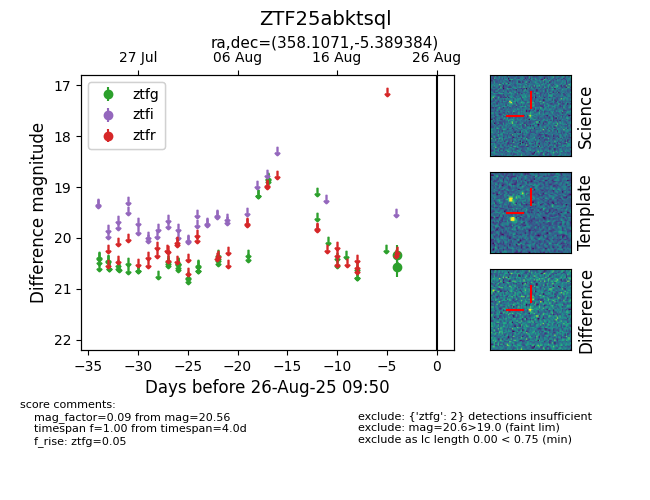

Target ZTF25abktsql at 2025-08-26 09:50, see:
FINK: fink-portal.org/ZTF25abktsql
Lasair: lasair-ztf.lsst.ac.uk/objects/ZTF25abktsql
ALeRCE: alerce.online/object/ZTF25abktsql
alt names
ZTF25abktsql (ztf,fink)
coordinates:
equatorial (ra, dec) = (358.1071,-5.38938)
galactic (l, b) = (87.4315,-64.11511)
photometry
last ztfg=20.56
2 ztfg detections
